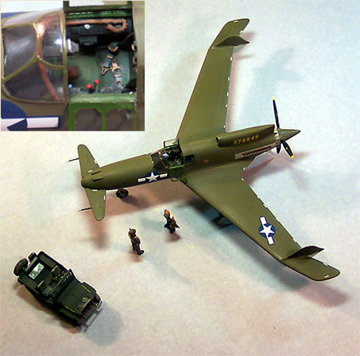

Czech Models Curtiss XP-55 �Ascender�
Kit # 4806 MSRP $29.95
Model, images and text Copyright � 2004 by Matt Swan
Developmental Background
One of the most unusual Army Air Forces research projects to be revealed to the public by the Air Technical Service Command is the Curtiss XP-55 Ascender, a tail-first, pusher fighter. The XP-55 resulted from Army Air Corps proposal R-40C calling for unconventional aircraft designs. It called for a fighter that would be much more effective than any currently in inventory or under development with a top speed, rate of climb, maneuverability, armament, and pilot visibility, all of which would be far superior to those of any existing fighter. In addition, the fighter was required to have a low initial cost and had to be easy and inexpensive to maintain. The Army specifically mentioned in R-40C that they would consider aircraft with unconventional configurations.
Perhaps the most unconventional of the four finalists was the Curtiss entry, designated CW-24 by the company. It was to be one of the last projects supervised by Donovan Berlin before he left Curtiss to work on the P-75 project for Fisher. The CW-24 was a swept-wing pusher aircraft with canard elevators. The low-mounted sweptback wings were equipped with ailerons and flaps on the trailing edge as well as directional fins and rudders mounted near the wing tips both above and below the airfoil. A completely retractable tricycle undercarriage was to be used, the first time such an undercarriage was to be employed in a Curtiss fighter. Curtiss proposed to use the new and untried Pratt & Whitney X-1800-A3G liquid-cooled engine, mounted behind the pilot's cockpit and driving a pusher propeller. The three-bladed propeller could be jettisoned to allow the pilot to safely bail out of the aircraft in the event of an in-flight emergency. Projected maximum speed was no less than 507 mph! On June 22, 1940, the Curtiss-Wright Company received an Army contract for preliminary engineering data and a powered wind tunnel model.
On July 10, 1942, a USAAF contract was issued for three prototypes under the designation XP-55. The 2000 hp Pratt and Whitney X-1800 engine died on the development table and the prototypes were redesigned for the semi-obsolescent Allison V-1710 used in the P-40. Thus, at best, the XP-55 was condemned to a level of performance allowed by a dated 1275 hp engine. Armament was to be two 20-mm cannons and two 0.50-inch machine guns. During the mockup phase the 20-mm cannon were replaced by 0.50-inch machine guns.

The first XP-55 (42-78845) was completed on July 13, 1943. It made its first test flight on July 19, 1943 from the Army's Scott Field near the Curtiss-Wright St Louis plant. The aircraft experienced stability problems and underwent several modifications to increase the canard elevator surface, vertical stabilizer area, and eventually received four-foot wing tip extensions to improve stall characteristics. The first prototype underwent stall testing in December 1942 and on the third attempt the aircraft pitched forward 180 degrees onto its back and fell into the same inverted descent predicted in original Air Corps wind tunnel tests. The engine quit and nothing the pilot did could break the stall. After a perfectly stable fall of 16,000 feet, the pilot, J. Harvey Gray, bailed out safely. The aircraft continued straight down and dug a large smoking hole in the desert floor. After modifications, stall tests were performed satisfactorily, although the complete lack of any warning prior to the stall and the excessive loss of altitude necessary to return to level flight after the stall were undesirable characteristics.
An artificial stall warning device was introduced to try and correct some of these problems, and between September 16 and October 2, 1944, the second Ascender underwent official USAAF trials. The trials indicated that the XP-55 had satisfactory handling characteristics during level and climbing flight, but at low speeds and during landings there was a tendency on the part of the pilot to over-control on the elevators because of a lack of any useful "feel". Pilot, Russ Schleeh, commented that it was terribly unstable, and that if you took your eyes off the horizon for a moment, even in the landing pattern, the plane would drift wildly off course.
The performance of the XP-55 was not very impressive and was in fact inferior to that of the more conventional fighters already in service. Performance was mediocre with the Allison V-1710 engine attaining only 377 mph instead of the hoped-for 500 mph. Engine cooling was also a problem. In addition, by 1944, jet-powered fighter aircraft were clearly the wave of the future. Consequently, no production was undertaken, and further development was abandoned. The third prototype survived the testing program, but was destroyed in an accident on May 27, 1945, at Wright Field, Ohio. The pilot came in low over the field during an air show, attempted a barrel roll at low altitude, and crashed. Not only was the aircraft destroyed but the pilot was killed as well as a passing motorist. The sole surviving XP-55 (42-78846) was flow to Warner Robins Field in Georgia in May of 1945. It was later taken to Freeman Field to await transfer to the National Air Museum at the Smithsonian Institution in Washington. Currently the aircraft is in the Kalamazoo Aviation History Museum undergoing a complete restoration.
The name Ascender had originated as a joke on the part of a Curtiss engineer, a reference to the aircrafts rather odd design which was not appreciated by the congressional oversight committee. The name stuck, and eventually became official. Had the aircraft been fitted with the originally intended 2000 hp engine and had fly-by-wire systems been available at the time, it most likely would have been a successful design. Ultimately, it simply became another aerial oddity.
The Kit
Czech Models has provided us with another exotic multi-media, limited run kit here. The one aspect about Czech Models that I never was happy with was the annoying box that opens from the end rather than having the lift off top. Hopefully some day they will change their packaging approach. Inside we have a small collection of rather interesting parts. There are two sprues of light gray plastic injection-molded pieces featuring crisply engraved panel lines, no obvious sink marks and little to no excess flash. The mold separation lines were subdued and there were no serious injector pin markings that caught my attention. All together these two trees comprise thirty-seven injection-molded pieces. Also here we have just one vacuformed canopy. This is very disappointing because there is now no room for error. I was determined to build mine with the cockpit open � this canopy hinges like a �B� model P-51 Mustang so very careful cutting with a scalpel was required.
Next we have a bag full of resin goodies. Cast in light tan resin are the cockpit interior pieces including sidewalls, main landing gear bay inserts, wheels and exhaust pipes. There are eighteen resin pieces but the main cockpit tub on mine is severely warped. The impression I get is that the pieces were pulled too soon from the molds and packed before they had completely set up. The resin pieces do display a very nice level of detail and the pilot�s seat has beautifully done seat belts. The main wheels have a very nicely done tread pattern on them also. For this kit we have a total parts count of fifty-six pieces and three that must be scratch built � these being two cockpit levers and the dorsal aerial. I went just a little further and added some fine fuse wire as canopy door restraints.
Like all the kits coming out of the Czech republic and surrounding areas, there are no locator pins on any of the pieces. While this requires that the modeler pay particular attention to lining the main pieces up properly in some instances it is a boon. More than once I have found locator pins that are poorly located causing misalignment problems. The pieces do fit together well and everything lines up without a lot of difficulty. The only place where I ran into trouble with fit was installing the landing gear bays. It was necessary to sand the tops of the resin bays until they were nearly transparent and to sand the interior of the top wing. The landing gear doors are cast in one piece and they must be cut apart to build this with the gear down.
Decals and Instructions
There were only three of these aircraft ever manufactured and two of them met disastrous ends. The decals provided for this kit are for the only surviving example. This was a test-bed aircraft so the markings are basic and include a variety of �no step� placards and basic Hamilton Standard propeller markings. The print registry is precise and the color density is good. The decals behaved well during application, were nice and thin and did not react in any unexpected manner when setting solutions were applied.
The instructions are comprised of a single large, two-page fold-out. The front page includes a nice black and white photo of the Ascender, a fairly well done historical section, a basic parts diagram and count and some basic instructions on working with resin pieces. The two inside pages consist of seven exploded view construction steps that include some additional construction text. There are no color call-outs here but the last page does include a couple of paragraphs covering all the various colors for the interior and exterior. The last page also covers the decal placement, proper landing gear alignment and wing dihedral.
Conclusions
This was really a fun kit to build. The only two areas that gave me any trouble were the landing gear bay inserts in the wings and getting the propeller blades at the proper angle and orientation. The rest of the parts fit well and while the lack of a second canopy was a concern, the one provided was thin enough as to not give me a lot of trouble cutting it apart. There were several areas during the construction where I was tempted to succumb to AMS. This would be an excellent kit to open up the engine bay and stick an Aires Allison engine in there or to open the radio compartment door behind the cockpit or even open the access panels for the gun bay. It�s so hard to hold myself back � I just may have to get a second on of these and really let go.
Compared to some of the other multimedia kits on the market this one is fairly simple. The subject is most definitely unusual and makes a great addition to any World War Two collection. Considering the simplicity of the kit and the ease of assembly I would recommend this as a good introduction kit for the modeler that has mastered basic injection molded kits and would like to break into the exciting world of resin detailed aircraft.